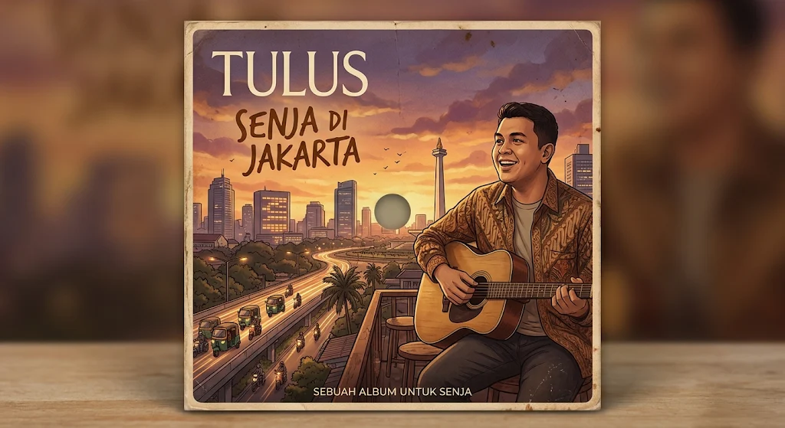
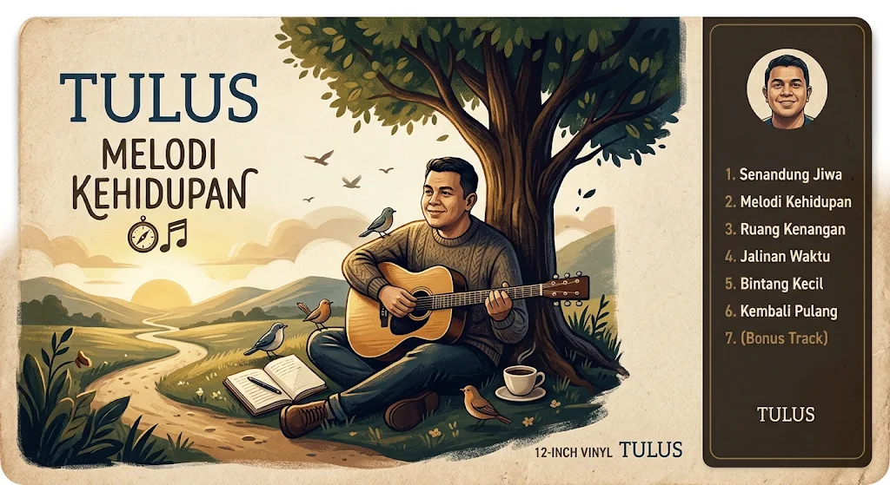
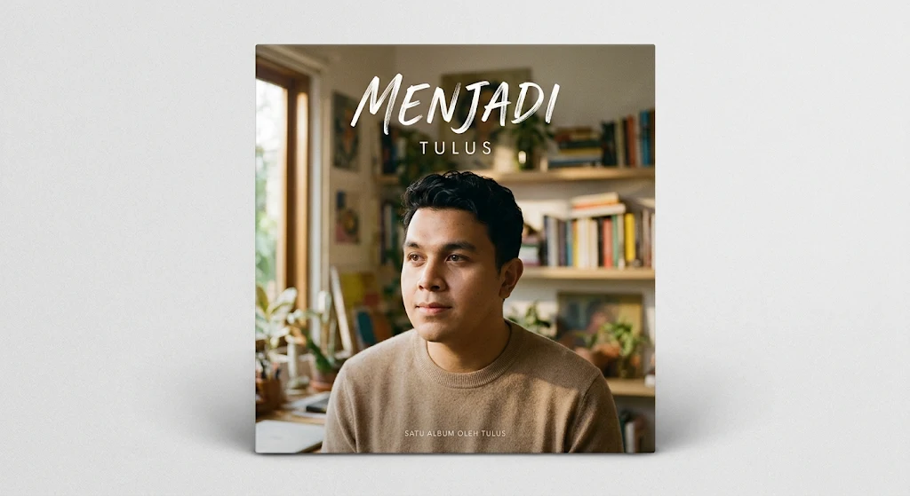

Rumah ke Rumah (Full Album)Listen Now
Tulus merupakan musisi Indonesia yang dikenal dengan gaya musik pop yang dipadukan dengan sentuhan jazz dan nuansa soul yang lembut. Lagu-lagunya memiliki meloddi yang hangat, lirik yang puitis, serta cerita sederhana tentang cinta, kehidupan, dan perjalanan perasaan manusia. Musik Tulus mampu menghadirkan suasana yang tenang sekaligus menyentuh hati, seolah setiap lagunya menjadi teman untuk berbagai cerita kehidupan.
Dengan karakter musik yang dekat dengan kehidupan sehari-hari, Tulus menjadi salah satu musisi yang menarik bagi pendengar Gen Z. Melalui lirik yang penuh makna dan melodi yang mudah dinikmati, lagu-lagunya cocok menemani berbagai suasana, mulai dari jatuh cinta, kehilangan, hingga menemukan jati diri. Karyanya menjadi ruang bagi generasi muda untuk mengenali, memahami, dan merayakan setiap perasaan yang mereka alami.
Spotify followers
Monthly Listeners
Official Full Albums

Rumah ke Rumah (Full Album)Listen Now

Menari Dengan Bayangan Listen Now
besok mungkin kita sammpai Listen Now